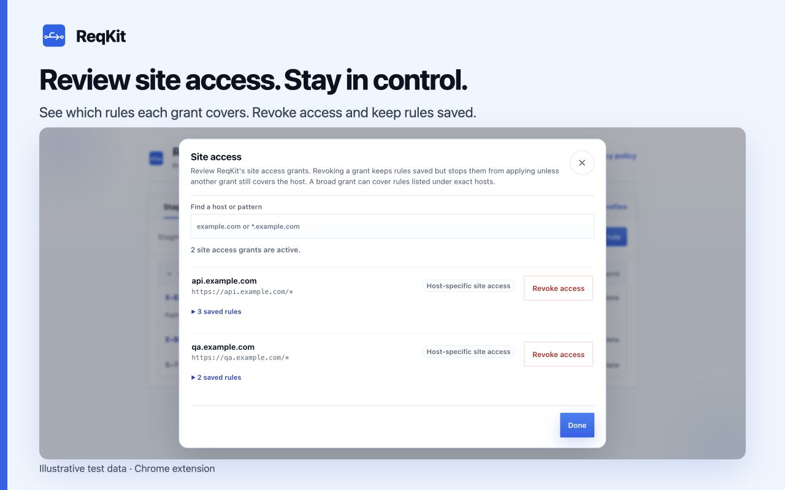

Choose how long a profile applies
Temporary debug headers are easy to forget. ReqKit can stop applying an active profile automatically, while keeping the rules saved for your next test.
- Open the rule manager from the popup and select the profile you want to use.
- In the active setup row, choose 1 hour, 8 hours, Chrome closes, or I turn it off.
- Check that the master switch and the rules you need are On. Confirm site access for their exact HTTPS hosts.
- Continue testing. ReqKit uses a Chrome alarm for timed expiry even while its popup and rule manager are closed.
| Duration | When headers stop applying |
|---|---|
| 1 hour | One hour after you arm the timer. |
| 8 hours | Eight hours after you arm the timer. |
| Chrome closes | When the browser session ends. Closing just one tab or window may leave Chrome running. |
| I turn it off | When you pause the profile or all rules yourself. |

What happens when the timer ends?
ReqKit parks the active profile. Its rules stop applying, but their names, values, scopes, and individual On or Paused settings stay saved. Resume when you need the setup again, then choose a fresh timer if appropriate.
Changing profiles disarms the timer. Choosing a duration arms a new one. Always check the current profile and remaining time after switching environments.
Pause everything immediately
Use the master switch in the popup or rule manager, or press Alt+Shift+X if that shortcut is available in your Chrome setup. The toolbar badge shows off while rules are paused. Resuming restores the previous individual rule states; it does not turn every paused rule On.
Review site access separately
A timer controls whether rules apply; it does not delete rules or revoke a site's permission. Open Site access to inspect and revoke grants. Revoking a grant keeps rules saved, but they stop applying unless another grant still covers the host.
